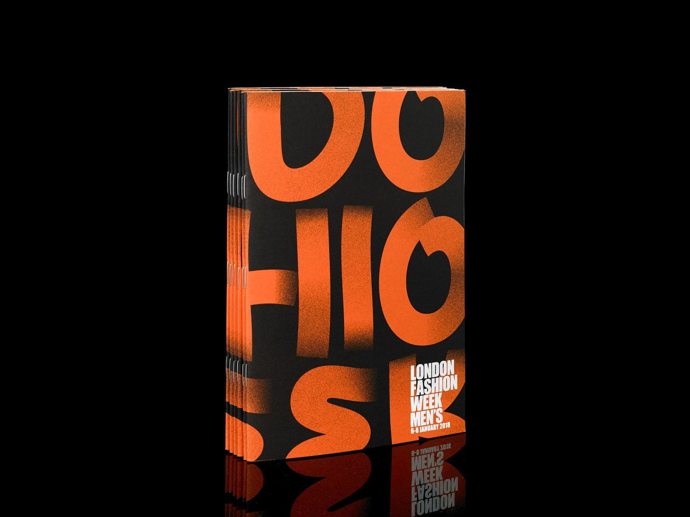
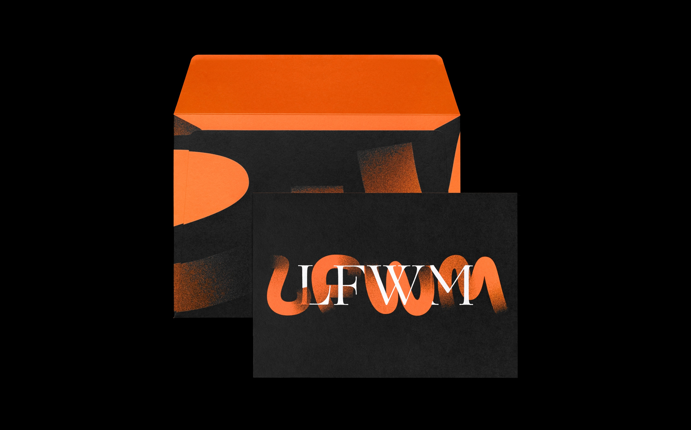
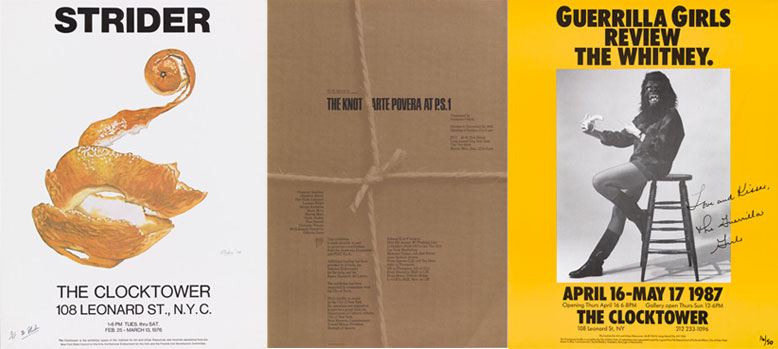
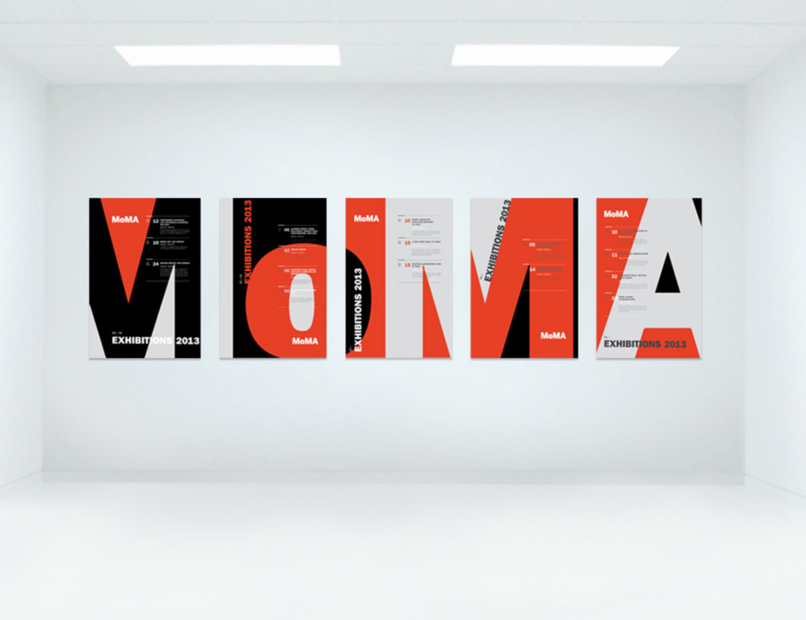
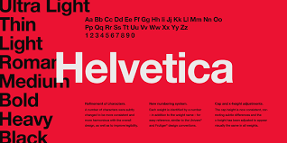

www.threeartworks.com



I love what the pentagram did for the London Fashion Week. They mostly used 3colors in the visual set. Orange, black and grey. The elegant serif typeface represents the London style,
the lady side of the fashion week.
But the sans-serf and the orange color are represents bold and creative style for the fashion week, it will defiantly grab your attention when you walk on the street.They use a pastel feeling on the poster as the back ground, this also makes the layers more clear. Which is

I also loved a serious of posters from MoMA. This serious use MoMA’s typical color, Black, Red and Light Grey. These color make high contrast between each other. Designer use the letter MoMA to make the poster, he put the words in the posters and play with the negative space, If you look further you will see the Logo for MoMA, if you look closely, you still can see the detail information on every page. I believe what’s the hardest among all the the issues is how to keep the balance between further look and closer look. The balance to put the negative space and use the contrast color. The designer did that perfectly.


I admire this typeface because it combine modern and the typical graphic design, it’s a typeface you can use in every circumstance. It’s a typeface that no-one can improve, and also the most popular type around the world. It’s corning and heigh are just perfect. I love it also because it unify the typeface that we usually used in our daily lives. I admired it because it was invented back in 1950s and it can still be used widely 70years after. That shows how typical the Helvetica is.Helvetica or Neue Haas Grotesk is a widely used sans-serif typeface developed in 1957 by Swiss typeface designer Max Miedinger with input from Eduard Hoffmann.Helvetica is a neo-grotesque or realist design, one influenced by the famous 19th century typeface Akzidenz-Grotesk and other German and Swiss designs.[2] Its use became a hallmark of the International Typographic Style that emerged from the work of Swiss designers in the 1950s and 60s, becoming one of the most popular typefaces of the 20th century.[3] Over the years, a wide range of variants have been released in different weights, widths, and sizes, as well as matching designs for a range of non-Latin alphabets.